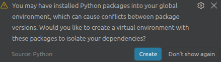
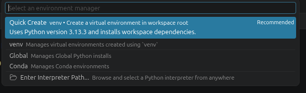
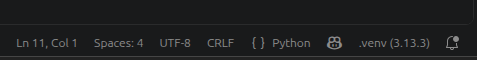
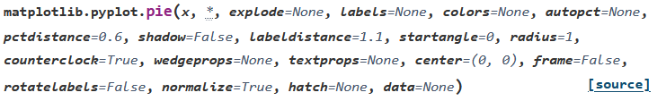
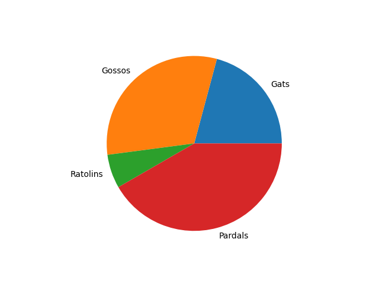
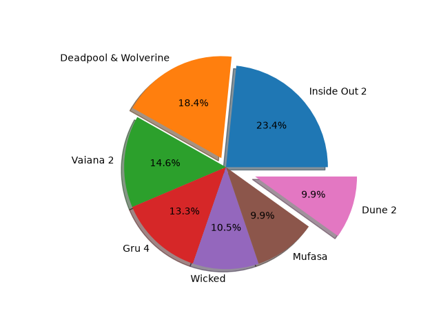
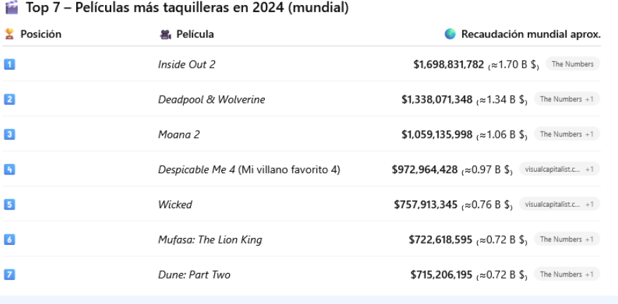
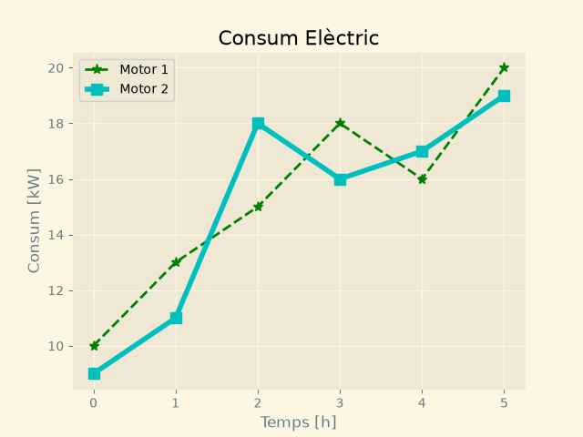
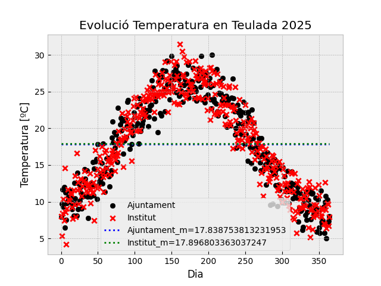

13 Creació de gràfiques
La biblioteca Matplotlib permet crear una àmplia varietat de gràfics (gràfics de línies, de barres, de dispersió, circulars bàsics, 3D …). Podeu trobar la documentació completa en https://matplotlib.org.
13.1 Creació d'un virtual environment
Per a poder treballar amb Matplotlib, el primer que caldrà fer és importar els components de la llibreria que necessitem. Per exemple, per a utilitzar pyplot() faríem:
import matplotlib.pyplot as plt
Com que Matplotlib no és una llibreria nativa de Python, a l'executar el nostre codi el primer que obtindrem serà un error com aquest.
Traceback (most recent call last):
File "/home/profe/Documents/grafiquesMatploLib/iniiciar.py", line 1, in <module>
import matplotlib.pyplot as plt
ModuleNotFoundError: No module named 'matplotlib'
Que ve a dir que el mòdul matplotlib no es troba en instal.lat.
Depenent del Sistema Operatiu i la configuració de Python, haureu de seguir uns passos per a la instal·lació de Matplotlib.
Utilitzant VSC
Per al nostre SO i instal.lació global de Python, farem el següent en la terminal de Visual Studio Code (VSC):
pip install matplotlib
I segurament obtindreu el següent avís en la terminal:
error: externally-managed-environment
× This environment is externally managed
╰─> To install Python packages system-wide, try apt install
python3-xyz, where xyz is the package you are trying to
install.
If you wish to install a non-Debian packaged Python application,
it may be easiest to use pipx install xyz, which will manage a
virtual environment for you. Make sure you have pipx installed.
See /usr/share/doc/python3.13/README.venv for more information.
note: If you believe this is a mistake, please contact your Python installation or OS distribution provider.
You can override this, at the risk of breaking your Python installation or OS, by passing --break-system-packages.
hint: See PEP 668 for the detailed specification.
A més a més, també és possible que VSC ens oferisca la possibilitat de crear un Virtual Environment.

Aquestos avisos venen a dir que, com que la nostra instal.lació de Python és global per a tots els usuaris i projectes de l'equip, instal.lar o modificar paquets de forma global pot fer que altres projectes deixen de funcionar.
Una solució per a evitar aquests tipus de conflictes és treballar amb entorns virtuals de Python (els virtual environments).
Un entorn virtual és un entorn de desenvolupament totalment autònom, amb el seu propi intèrpret de Python, les seues pròpies llibreries i les dependències necessàries. Això crea una configuració "mini" de Python separada, completament aïllada de la instal·lació de Python del sistema i de qualsevol altre entorn virtual que puguem tindre.
Aprofitarem que VSC ens oferix la possibilitat de crear un virtual environment per al nostre projecte i apretarem sobre el botó Create. En la barra superior de VSC apareixerà un missatge semblant al següent, i caldrà que fem click en ell:

VSC crearà el virtual environment i realitzarà ja la instal.lació de matplotlib. Podem comprovar si estem treballant amb l'entorn virtual en la barra inferior dreta de VSC, on apareixerà:

.venv(3.13.3) fa referència a que estem treballant en un entorn virtual amb la versió 3.13.3 de Python.
Si executem ara un codi que simplement faça una importació des de matplotlib,
import matplotlib.pyplot as plt
no obtindrem l'error d'importació del mòdul i a més podrem vorer que el prompt de la terminal indica ara que estem treballant dins l'entorn virtual.
(.venv) profe@osboxes:~/Documents/grafiquesMatploLib$
Des del terminal de Linux
Si no treballem amb VSC, podem igualment crear i utilitzar entorns virtuals des de la terminal del nostre equip.
Primer crearem la carpeta del nostre projecte i a continuació crearem l'entorn virtual.
mkdir grafiques
cd grafiques
python3 -m venv venv-grafiques
Dins la carpeta del nostre projecte s'haurà creat l'entorn virtual venv-grafiques.
profe@osboxes:~/Documents/grafiques$ ll
total 12
drwxr-xr-x 3 profe profes 4096 Nov 18 13:28 ./
drwxr-xr-x 8 profe profes 4096 Nov 18 13:28 ../
drwxr-xr-x 5 profe profes 4096 Nov 18 13:28 venv-grafiques/
profe@osboxes:~/Documents/grafiques$
Una vegada creat el venv, caldrà activar-lo per a poder utilitzar-lo.
profe@osboxes:~/Documents/grafiques$ source venv-grafiques/bin/activate
(venv-grafiques) profe@osboxes:~/Documents/grafiques$
Vorem com el prompt del terminal canvia, indicant que el venv està activat.
Podem ja començar a implementar el codi dins la carpeta del projecte i a importar les llibreries necessàries sense modificar la instal.lació global de Python de l'equip.
13.1 Línies i Dispersió
Un gràfic de línies és ideal per a mostrar els canvis en una mesura al llarg del temps. En Matplotlib, els termes plot, graph i chart s'usen indistintament, i el terme figure es refereix a la finestra que conté un o més gràfics.
Importem matplotlib.pyplot amb el nom plt per a facilitar la introducció de les seues funcions.
A continuació, per a representar els punts de dades en una figura 2D, hem de cridar a la funció plt.plot(). Primer associarem al gràfic els valors per als eixos horitzontal/vertical guardats en x i y1. Després de cridar a plt.plot() amb aquests valors, l'invoquem una segona vegada amb x i y2 per a afegir una segona línia al gràfic.
import matplotlib.pyplot as plt
x = [0, 1, 2, 3, 4, 5]
y1 = [10, 13, 15, 18, 16, 20]
y2 = [9, 11, 18, 16, 17, 19]
plt.plot(x, y1)
plt.plot(x, y2)
# Per guardar un fitxer d'imatge del gràfic, heu de cridar
# plt.savefig() abans de cridar a plt.show()
plt.savefig('linies.png')
plt.show()
Matplotlib seleccionarà automàticament els colors de les línies i una grandària adequada per al gràfic. Podem guardar el gràfic predeterminat com una imatge PNG cridant a plt.savefig().

Matplotlib compta amb la funció plt.show() de vista prèvia que mostra el gràfic en una finestra. Cal remarcar que, si volem guardar el gràfic, hem de fer-ho abans de cridar a la funció plt.show(). La crida a la funció bloquejarà l'execució del codi i no tornarà fins que l'usuari tanque la finestra.
Per a crear un gràfic de dispersió d'aquestes mateixes dades, passeu els valors de l'eix x i de l'eix y a la funció plt.scatter().
# Gràfica Scatter
plt.scatter(x, y1)
plt.scatter(x, y2)
plt.savefig('scatter.png')
plt.show()

13.2 Barres i gràfics circulars
Els gràfics de barres són útils per a comparar el mateix tipus de dades en diferents categories. A diferència d'un gràfic de línies, l'ordre de les categories no és important, encara que solen estar ordenades alfabèticament.
# Barres
categories = ['Gats', 'Gossos', 'Ratolins', 'Pardals']
valors = [100, 150, 30, 200]
plt.bar(categories, valors)
plt.savefig('barres.png')
plt.show()
Passem les categories a enumerar en l'eix x com la primera llista a plt.bar() i els valors per a cada categoria com la segona llista.

Per a crear un gràfic circular, utilitzarem la funció plt.pie(). En lloc de categories i valors, un gràfic circular té sectors i etiquetes. La funció plt.pie() accepta una llista de grandàries de porció i una llista d'etiquetes per a cada porció.
# Gràfic Circular
porcions = [100, 150, 30, 200] # El tamany de cada porció
etiquetes = ['Gats', 'Gossos', 'Ratolins', 'Pardals']
plt.pie(porcions, labels=etiquetes)
plt.savefig('tarta.png')
plt.show()
El primer argument posicional de plt.pie() fa referència a les porcions x (porcions en aquest exemple), però el segon no fa referència a les etiquetes, sinó a l'atribut explode, per la qual cosa per a assignar els valors d'etiquetes a l'atribut labels del plt.pie() hem d'especificar-ho en la crida a la funció.
Podeu consultar els detalls dels diferents paràmetres de plt.pie() en la seua documentació oficial.


Entre la gran diversitat d'atributs que podem modificar per a obtindre el gràfic desitjat, l'atribut autopct ens permet mostrar el valor de cada porció com un % respecte del total.
plt.pie(porcions, labels=etiquetes, autopct='%.1f%%')
plt.savefig('tartaX100.png')
plt.show()

L'atribut és una cadena d'especificació de format: la cadena '%.1f%%' especifica que el nombre ha de mostrar un dígit després del punt decimal i després del decimal es mostra el símbol de % (la cadena '%.1f' mostraria el mateix valor, però sense el símbol de % final).
EXERCICIS
1. Pel.lícules
Crea el gràfic circular mostrat a partir de les dades proporcionades per ChatGPT. Consulta la documentació i exemples de matplotlib.pyplot.pie per a esbrinar com fer l'ombra i la separació entre porcions.


2. Consum elèctric
Crea el gràfic mostrat a partir de les següents dades:
x = [0, 1, 2, 3, 4, 5]
y1 = [10, 13, 15, 18, 16, 20]
y2 = [9, 11, 18, 16, 17, 19]
Consulta la documentació de matplotlib.pyplot.plot i el CheatSheet d'AULES per a aconseguir els canvis.

3. Temperatures
Crea el gràfic mostrat a partir de les dades guardades en temperatures_teulada_2025.csv. Les línies puntejades i la llegenda mostren el valor mitjà de cada una de les temperatures.
